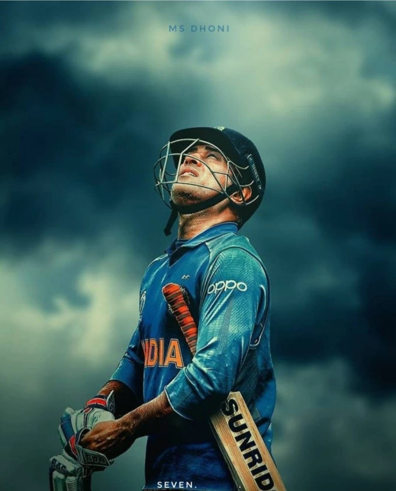

season1
season2
season3
season4
season1

Mahendra Singh Dhoni (/məˈheɪndrə ˈsɪŋ dhæˈnɪ/ ⓘ; born 7 July 1981) is an Indian professional cricketer who plays as a right handed batter and a wicket-keeper. Widely regarded as one of the most prolific wicket-keeper-batsmen and captains, he represented the Indian cricket team and was the captain of the side in limited-overs formats from 2007 to 2017 and in test cricket from 2008 to 2014. Dhoni has captained the most international matches and is the most successful Indian captain. He has led India to victory in the 2011 Cricket World Cup, the 2007 ICC World Twenty20 and the 2013 ICC Champions Trophy, the only captain to win three different limited overs tournaments. He also led the teams that won the Asia Cup in 2010, 2016 and was a member of the title winning squad in 2018.
back to top
season2

AWARDS HE GOT
Awards Padma Bhushan 2018
Padma Shri 2009
ICC Men's ODI Cricketer of the Year 2009, 2008
ICC Men's ODI Team of the Year 2014, 2013, 2012, ...
ICC Award for Spirit of Cricket 2011
LG People's Choice Award 2013
CNN-IBN Indian of the Year in Sports 2011
back to top
season3
2011 World Cup win and later
Dhoni led the Indian squad for the 2011 Cricket World Cup co-hosted by India.[75] India won its second ever ODI world cup after defeating Sri Lanka in the final with Dhoni being named man of the match for scoring an unbeaten 91.[76] In December 2012, Pakistan toured India for a bilateral series for the first time in five years and Dhoni top-scored in all the three matches of the series with a century in the first ODI at Chennai.[77] Dhoni led India to victory in the 2013 ICC Champions Trophy and became the first and the only captain in international cricket to claim all ICC limited overs trophies. In the rain-shortened final against England, India won by five runs on DLS method though Dhoni himself was out for a duck.[78] He was also named as captain and wicket-keeper of the 'Team of the Tournament' by the ICC.[79]
back to top
season4
.jpeg)
Test retirement and 2015 World cup
Dhoni played his last series during India's tour of Australia in December 2014. Following the third Test in Melbourne, Dhoni announced his retirement from the format.[87] In his last test, he effected nine dismissals (eight catches and a stumping), and in the process, went past Kumar Sangakkara's record for most stumpings in international cricket and also set a record for effecting the most dismissals in a match by an Indian wicketkeeper until it was broken by Wriddhiman Saha in 2018.[88][89] In the Carlton Mid triangular series in Australia, India failed to win a single match with Dhoni himself managing just 70 runs from three innings at an average of 23.34.[90]
During the 2015 Cricket World Cup, Dhoni became the first Indian captain to win all group stage matches in a world cup.[91] In the match against Zimbabwe at Auckland, he made 85 which was the highest score by an Indian captain in New Zealand. After beating Bangladesh in the quarter finals, he became the third overall and the first non-Australian captain to win 100 ODI matches.[92] India lost to eventual champions Australia in the semi-finals with Dhoni having a good series, scoring 237 runs in six innings at an average of 59.25 and a strike rate of 102.15 and thus, became only the second Indian captain to have an average over 50 and strike rate over 100 in a particular season of the World Cup.
back to top